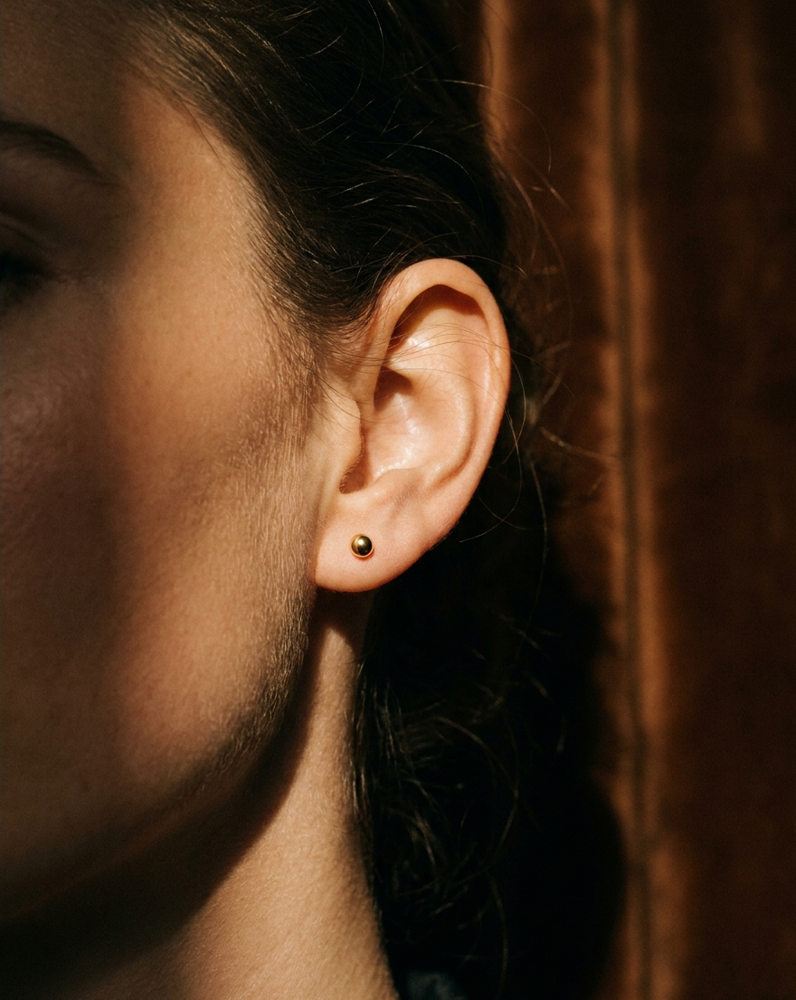

Dos capítulos de la misma historia.
La misma exigencia de pureza, adaptada a cada etapa de la vida.
Desde la primera perforación de un bebé hasta la joya de uso diario de una mujer adulta. Pūrly diseña para la piel que merece lo mejor, sin compromisos.
hipoalergénico desde el primer momento. Para la primera perforación.
"Lo más exigente para la piel más delicada."
La primera perforación de un bebé es un momento que merece el material más puro disponible. Nuestra línea bebé fue formulada con una sola pregunta: ¿qué usaríamos en la piel de nuestros propios hijos?
La respuesta: acero quirúrgico 316L y oro laminado 18k. Nada más. Nada menos.
de las mujeres ha dejado de usar joyería por las reacciones de su piel. Pūrly existe para eso.
"Diseñada para quien ya sabe lo que merece."
El uso cotidiano desgasta cualquier compromiso. Por eso la línea adulta combina el refinamiento de la plata 925 con la durabilidad del acero 316L y el carácter del oro laminado 18k.
Tres materiales. Un solo estándar: cero níquel, cero plomo, cero cadmio.

Las piezas de ambas líneas, el packaging que las contiene, la promesa que representan.